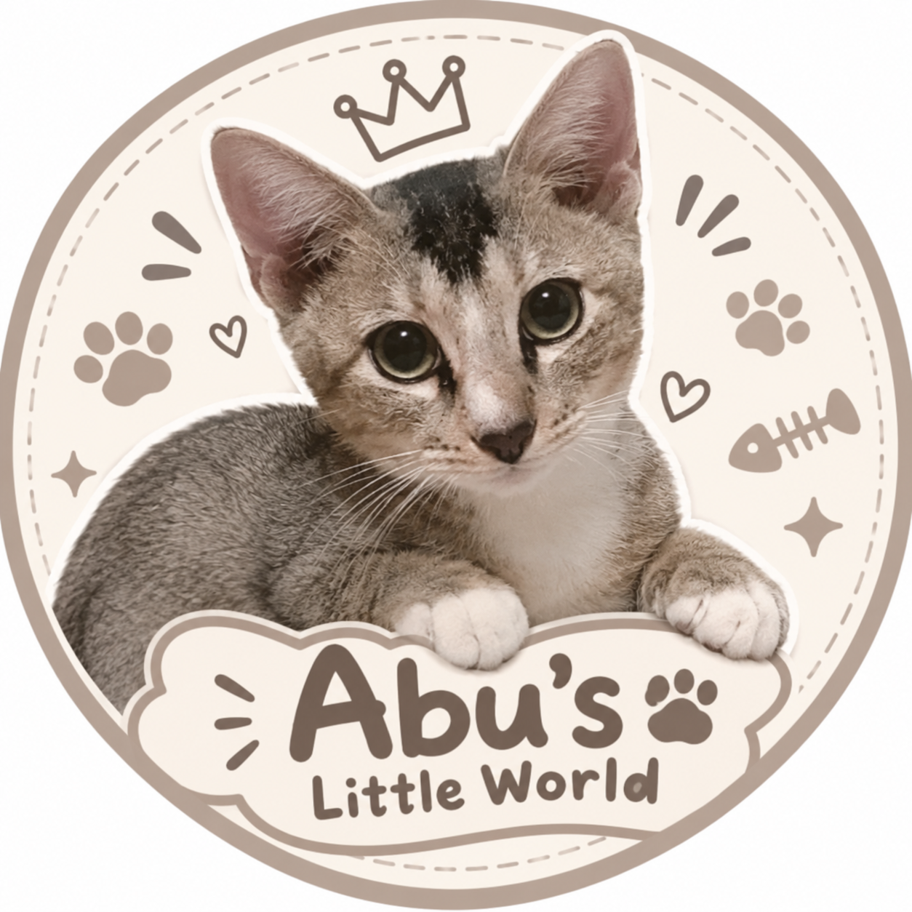
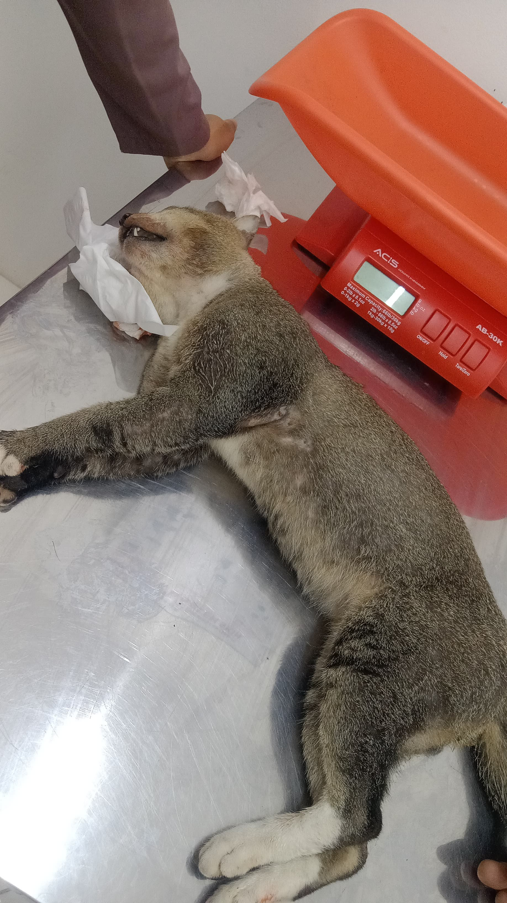

Abu dan Adik nya Lahir
Foto ini merupakan pertama kali saya dan keluarga meliat Abu dan Adik-adik nya lahir, sangat senang sekali melihatnya karena sangat lucu dan menggemaskan.

A Little Place to Remember Abu
Selamat datang di Abu's Little World! Website ini dibuat khusus untuk mengenang seekor kucing bernama Abu. Abu adalah kucing jantan dengan bulu berwarna abu-abu. Meskipun sekarang Abu sudah tidak ada, semua kenangan dan tingkah lucunya akan selalu tersimpan di hati.
Abu
Jantan
Abu-abu
.jpg)
Foto ini merupakan pertama kali saya dan keluarga meliat Abu dan Adik-adik nya lahir, sangat senang sekali melihatnya karena sangat lucu dan menggemaskan.
.webp)
Foto ini merupakan mengingkatkan saya ketika Abu kembali pulang ke rumah setelah berapa minggu lama nya telah hilang. Kami sekeluarga sangat khawatir sampai menangis setiap kali mengingat Abu, kami semua berusaha mencari Abu tetapi ternyata Abu kembali kerumah dengan sendiri nya di malam hari ketika kami semua sedang tidur. Kami semua sangat senang Abu bisa kembali lagi kerumah dengan kami.

Sangat sedih ketika melihat foto ini, Abu ketika main diluar ternyata Abu keracunan makanan. Tiba-tiba Abu sudah tertidur dan mulut nya keluar busa di malam hari. Kami semua sudah berusaha membawa Abu ke dokter tapi sayang nya Abu sudah tidak kuat diperjalanan dan akhirnya Abu sudah tidak sadar.